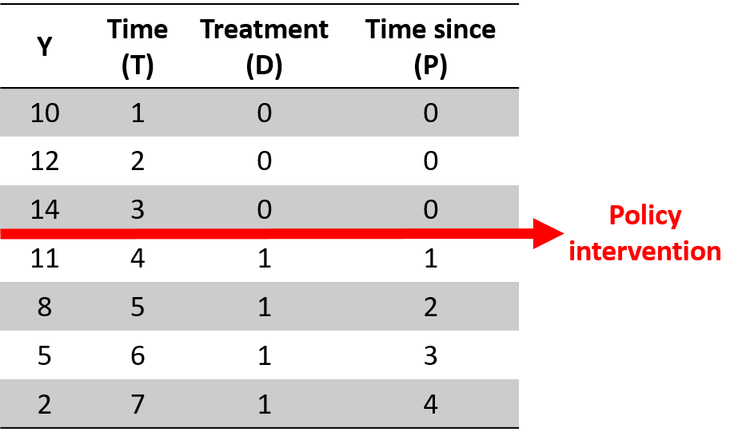

This post is based in one exercise of Matthew J. Salganik’s book Bit by Bit: Social Research in the Digital Age, from chapter 2.
Introduction
Penney (2016) explored whether the widespread publicity about NSA/PRISM surveillance (i.e., the Snowden revelations) in June 2013 was associated with a sharp and sudden decrease in traffic to Wikipedia articles on topics that raise privacy concerns. If so, this change in behavior would be consistent with a chilling effect resulting from mass surveillance. The approach of Penney (2016) is sometimes called an interrupted time series design.
To choose the topic keywords, Penney referred to the list used by the US Department of Homeland Security for tracking and monitoring social media. The DHS list categorizes certain search terms into a range of issues, i.e., “Health Concern,” “Infrastructure Security,” and “Terrorism.” For the study group, Penney used the 48 keywords related to “Terrorism” (see appendix table 8). He then aggregated Wikipedia article view counts on a monthly basis for the corresponding 48 Wikipedia articles over a 32-month period from the beginning of January 2012 to the end of August 2014. To strengthen his argument, he also created several comparison groups by tracking article views on other topics.
Now, we are going to replicate and extend Penney (2016). All the raw data that you will need for this activity is available from Wikipedia (https://dumps.wikimedia.org/other/pagecounts-raw/). Or we can get it from the R-package wikipediatrend (Meissner and Team 2016).
Testing wikipediatrend package
library(tidyverse)
library(wikipediatrend)
library(lubridate)
library(kableExtra)
# download pageviews from R and Python languages
trend_data <- wp_trend(
page = c("R_(programming_language)","Python_(programming_language)"),
lang = c("en"),
from = now()-years(2),
to = now()
)
# what we have?
head(trend_data) %>%
knitr::kable() %>%
kable_styling(font_size = 10)| language | article | date | views | |
|---|---|---|---|---|
| 732 | en | python_(programming_language) | 2019-03-24 | 5215 |
| 1 | en | r_(programming_language) | 2019-03-24 | 2545 |
| 733 | en | python_(programming_language) | 2019-03-25 | 7463 |
| 2 | en | r_(programming_language) | 2019-03-25 | 3762 |
| 734 | en | python_(programming_language) | 2019-03-26 | 7568 |
| 3 | en | r_(programming_language) | 2019-03-26 | 3914 |
# ploting
trend_data %>%
ggplot(aes(x=date, y=views, color=article)) +
geom_line() +
theme_light() +
theme(legend.position = "bottom") +
ylim(0,25000) +
labs(title="Daily Page Views",
subtitle = "Last 2 Years for articles of R and Python in english language")
Reproduction
Part A
Read Penney (2016) and replicate his figure 2, which shows the page views for “Terrorism”-related pages before and after the Snowden revelations. Interpret the findings.
fig2
# loading DHS keywords listed as relating to “terrorism”
keywords <- read.delim("./keywords_table8.txt") %>%
janitor::clean_names()
# lets see it
head(keywords) %>%
knitr::kable() %>%
kable_styling(font_size = 11)| topic_keyword | wikipedia_articles | government_trouble | browser_delete | privacy_sensitive | avoidance |
|---|---|---|---|---|---|
| Al Qaeda | http://en.wikipedia.org/wiki/Al-Qaeda | 2.20 | 2.11 | 2.21 | 2.84 |
| Terrorism | http://en.wikipedia.org/wiki/terrorism | 2.19 | 2.05 | 2.16 | 2.79 |
| Terror | http://en.wikipedia.org/wiki/terror | 1.98 | 1.96 | 2.01 | 2.64 |
| Attack | http://en.wikipedia.org/wiki/attack | 1.92 | 1.91 | 1.92 | 2.56 |
| Iraq | http://en.wikipedia.org/wiki/iraq | 1.60 | 1.74 | 1.76 | 2.25 |
| Afghanistan | http://en.wikipedia.org/wiki/afghanistan | 1.61 | 1.71 | 1.75 | 2.23 |
# getting wiki trends
# we can call all keywords at once
# but some keywords aren't return values,
# so let's iterate over each one
# making a "safe version", returning NULL instead of an error
safe_wpTrend <- safely(wp_trend, otherwise = NULL, quiet = T)
# for all keywords
trends <- keywords$wikipedia_articles %>%
# extract from "url" the article name
str_extract("(?<=wiki/)(.*)") %>%
# for each article, download the historic page views
map_df(function(.kw){
# "...over a 32-month period from the beginning of January 2012 to the end of August 2014..."
trends_resp <- safe_wpTrend(
page = .kw,
lang = c("en"),
from = "2012-01-01",
to = "2014-06-30" # removing last two months because they are returning 0 views
)
# will return NULL inst
return(trends_resp$result)
})
# "...aggregated Wikipedia article view counts on a monthly basis..."
terrorism_articles <- trends %>%
# remove some zeros from data
filter( views > 0) %>%
# group by "month" and sums the pageviews
mutate(date = floor_date(date, "month") ) %>%
group_by(date) %>%
summarise( views = sum(views) ) %>%
# mark the data related pre/pos Snowden revelations in June 2013
mutate( trend = if_else(date < ymd("20130601"), "Terrorism Article Trend Pre-June","Terrorism Article Trend Post-June") ) %>%
ungroup()
# Let's see the data
terrorism_articles %>%
ggplot(aes(x=date, y=views, color=trend)) +
geom_point(size=2.5) +
# ... the Snowden revelations in June 2013...
geom_vline(xintercept = ymd("20130515"), color="dark grey", linetype="dashed", size=1) +
geom_smooth(method = "lm", formula = y~x) +
theme_minimal() +
theme( legend.position = "bottom") +
labs(title="Pre and After June 13 Articles Trends",
subtitle="Terrorism related keywords",
x="date",y="monthly page views")
Part B
Next, replicate figure 4A, which compares the study group (“Terrorism”-related articles) with a comparator group using keywords categorized under “DHS & Other Agencies” from the DHS list (see appendix table 10 and footnote 139). Interpret the findings.

fig 4A
# load table 10
comp_table <- read.delim("./keywords_table10.txt") %>%
janitor::clean_names()
# lets see
head(comp_table) %>%
knitr::kable() %>%
kable_styling(font_size = 11)| topic_keyword | wikipedia_articles |
|---|---|
| Department of Homeland Security | https://en.wikipedia.org/wiki/United_States_Department_of_Homeland_Security |
| Federal Emergency Management Agency | https://en.wikipedia.org/wiki/Federal_Emergency_Management_Agency |
| Coast Guard | https://en.wikipedia.org/wiki/Coast_guard |
| Customs and Border Protection | https://en.wikipedia.org/wiki/Customs_and_Border_Protection |
| Border patrol | https://en.wikipedia.org/wiki/Border_Patrol |
| Secret Service | https://en.wikipedia.org/wiki/Secret_Service |
# get the trends
comp_trends <- comp_table$wikipedia_articles %>%
str_extract("(?<=wiki/)(.*)") %>%
str_to_lower() %>%
map_df(function(.kw){
# "...over a 32-month period from the beginning of January 2012 to the end of August 2014..."
trends_resp <- safe_wpTrend(
page = .kw,
lang = c("en"),
from = "2012-01-01",
to = "2014-06-30"
)
# will return NULL inst
return(trends_resp$result)
})
# "...aggregated Wikipedia article view counts on a monthly basis..."
sec_articles <- comp_trends %>%
filter( views > 0 ) %>%
mutate(date = floor_date(date, "month") ) %>%
group_by(date) %>%
summarise( views = sum(views) ) %>%
# ... the Snowden revelations in June 2013...
mutate( trend = if_else(date < ymd("20130601"),
"Control Group Articles Trend Pre-June",
"Control Group Articles Trend Post-June") ) %>%
ungroup()
sec_articles %>%
bind_rows(terrorism_articles) %>%
ggplot(aes(x=date, y=views, color=trend)) +
geom_point(size=2) +
geom_vline(xintercept = ymd("20130515"), color="dark grey",
linetype="dashed", size=1) +
geom_smooth(method = "lm", formula = y~x) +
theme_minimal() +
theme( legend.position = "right" ) +
labs(title="Pre and After June 13 Articles Trends",
subtitle="Terrorism related keywords and Control Group",
x="date",y="monthly page views")
Extra
The Statistical Model
From Jesse Lecy and Federica Fusi’s Interrupted Time Series we have the following scenario:

In mathematical terms, it means that the time series equation includes four key coefficients:
\[Y=b_0+b_1T+b_2D+b_3P+e\]
Where: * \(Y\) is the outcome variable; * \(T\) is a continuous variable which indicates the time (e.g., days, months, years…) passed from the start of the observational period; * \(D\) is a dummy variable indicating observation collected before (=0) or after (=1) the policy intervention; * \(P\) is a continuous variable indicating time passed since the intervention has occured (before intervention has occured P is equal to 0).
To model this, We would to have a dataset with this format:

So, let’s build ours
# building the dummy vars
regr_data <- trends %>%
# group trends by months
filter( views > 0 ) %>%
mutate( date = floor_date(date, unit = "month")) %>%
group_by( date ) %>%
summarise( views = sum(views) ) %>%
ungroup() %>%
arrange(date) %>%
mutate(
T = row_number(), # time var
D = if_else(T<=18,0,1), # post-event data 18 is 2013-06-01
P = if_else(T<=18,0,T-18) # post event time var
) %>%
rename( Y=views ) # just to make equal to the model
# what we have
regr_data %>%
filter( T>14, T<=22) %>%
knitr::kable() %>%
kable_styling(font_size = 11)| date | Y | T | D | P |
|---|---|---|---|---|
| 2013-03-01 | 3868814 | 15 | 0 | 0 |
| 2013-04-01 | 3595489 | 16 | 0 | 0 |
| 2013-05-01 | 3235093 | 17 | 0 | 0 |
| 2013-06-01 | 2725519 | 18 | 0 | 0 |
| 2013-07-01 | 2399060 | 19 | 1 | 1 |
| 2013-08-01 | 2451065 | 20 | 1 | 2 |
| 2013-09-01 | 2559672 | 21 | 1 | 3 |
| 2013-10-01 | 2550031 | 22 | 1 | 4 |
# building the model
mod1 <- lm( Y ~ T + D + P, data=regr_data )
# let's see
regr_data %>%
mutate( pred = predict(mod1) ) %>%
ggplot(aes(x=date, color=D)) +
geom_point(aes(y=Y)) +
geom_line(aes(y=pred)) +
geom_vline(xintercept = ymd(20130615), linetype="dashed", size=1) +
theme_minimal() +
theme( legend.position = "none" )+
labs(
title="Pre and After June 13 Articles Trends",
subtitle="Empirical Data and Model Prediction",
x="Date", y="Monthly Page Views")
summary(mod1)##
## Call:
## lm(formula = Y ~ T + D + P, data = regr_data)
##
## Residuals:
## Min 1Q Median 3Q Max
## -775138 -288426 57308 195202 842379
##
## Coefficients:
## Estimate Std. Error t value Pr(>|t|)
## (Intercept) 2579316 194174 13.284 4.27e-13 ***
## T 51186 17939 2.853 0.00838 **
## D -1078677 301608 -3.576 0.00140 **
## P -59553 37578 -1.585 0.12510
## ---
## Signif. codes: 0 '***' 0.001 '**' 0.01 '*' 0.05 '.' 0.1 ' ' 1
##
## Residual standard error: 394900 on 26 degrees of freedom
## Multiple R-squared: 0.5415, Adjusted R-squared: 0.4886
## F-statistic: 10.23 on 3 and 26 DF, p-value: 0.0001255We can see the significant drop in the moment of the event (\(D\)) and also a change in the trend after (\(P\) compared to \(T\)).
Statistical Model: Control Group
Yet from Jesse Lecy and Federica Fusi’s Interrupted Time Series
A time series are also subject to threats to internal validity, such as:
- Another event occurred at the same time of the intervention and cause the immediate and sustained effect that we observe;
- Selection processes, as only some individuals are affected by the policy intervention.
To address these issues, you can:
- Use as a control a group that is not subject to the intervention (e.g., students who do not attend the well being class)
This design makes sure that the observed effect is the result of the policy intervention. The data will have two observations per each point in time and will include a dummy variable to differentiate the treatment (=1) and the control (=0). The model has a similar structure but (1) we will include a dummy variable that indicates the treatment and the control group and (2) we will interact the group dummy variable with all 3 time serie coefficients to see if there is a statistically significant difference across the 2 groups.

You can see this in the following equation, where \(G\) is a dummy indicating treatment and control group.
\[Y=b_0+b_1∗T+b_2∗D+b_3∗P+b_4∗G+b_5∗G∗T+b_6∗G∗D+b_7∗G∗P\]
# building the dataset with control group
regr_control <- comp_trends %>%
# summarise by monthly
filter( views > 0 ) %>%
mutate( date = floor_date(date, unit = "month")) %>%
group_by( date ) %>%
summarise( views = sum(views) ) %>%
ungroup() %>%
mutate(
T = row_number(), # Time var in months
D = if_else(T<=18,0,1), # Mark Pre/Pos event data, 18 is 2013-06-01
P = if_else(T<=18,0,T-18),# Time after the event
G=0 # Control Group is 0
) %>%
rename( Y=views ) %>%
# add the effected data marked as treatment data
bind_rows( mutate(regr_data, G=1 ))
# let's see
regr_control %>%
filter( T>15, T<=21) %>%
arrange(T,D,G,P) %>%
knitr::kable() %>%
kable_styling(font_size = 11)| date | Y | T | D | P | G |
|---|---|---|---|---|---|
| 2013-04-01 | 1032305 | 16 | 0 | 0 | 0 |
| 2013-04-01 | 3595489 | 16 | 0 | 0 | 1 |
| 2013-05-01 | 873192 | 17 | 0 | 0 | 0 |
| 2013-05-01 | 3235093 | 17 | 0 | 0 | 1 |
| 2013-06-01 | 747513 | 18 | 0 | 0 | 0 |
| 2013-06-01 | 2725519 | 18 | 0 | 0 | 1 |
| 2013-07-01 | 632677 | 19 | 1 | 1 | 0 |
| 2013-07-01 | 2399060 | 19 | 1 | 1 | 1 |
| 2013-08-01 | 641141 | 20 | 1 | 2 | 0 |
| 2013-08-01 | 2451065 | 20 | 1 | 2 | 1 |
| 2013-09-01 | 705947 | 21 | 1 | 3 | 0 |
| 2013-09-01 | 2559672 | 21 | 1 | 3 | 1 |
# lets fit the model
mod2 <- lm( Y ~ T + D + P + G + G*T + G*D + G*P, data=regr_control )
summary(mod2)##
## Call:
## lm(formula = Y ~ T + D + P + G + G * T + G * D + G * P, data = regr_control)
##
## Residuals:
## Min 1Q Median 3Q Max
## -775138 -161714 28511 136682 842379
##
## Coefficients:
## Estimate Std. Error t value Pr(>|t|)
## (Intercept) 743019 151953 4.890 1.01e-05 ***
## T 10751 14038 0.766 0.44724
## D -86033 236027 -0.365 0.71696
## P -4588 29407 -0.156 0.87662
## G 1836297 214894 8.545 1.77e-11 ***
## T:G 40435 19853 2.037 0.04678 *
## D:G -992644 333792 -2.974 0.00445 **
## P:G -54965 41587 -1.322 0.19206
## ---
## Signif. codes: 0 '***' 0.001 '**' 0.01 '*' 0.05 '.' 0.1 ' ' 1
##
## Residual standard error: 309000 on 52 degrees of freedom
## Multiple R-squared: 0.924, Adjusted R-squared: 0.9137
## F-statistic: 90.28 on 7 and 52 DF, p-value: < 2.2e-16To interpret the coefficients you need to remember that the reference group is the treatment group (=1). The Group dummy \(b_4\) (coef \(G\)) indicates the difference between the treatment and the control group. \(b_5\) (coef \(T:G\)) represents the slope difference between the intervention and control group in the pre-intervention period. \(b_6\) (coef \(D:G\)) represents the difference between the control and intervention group associated with the intervention. \(b_7\) (coef \(P:G\)) represents the difference between the sustained effect of the control and intervention group after the intervention.
# can we see the points (trend and control) and the model fitted
regr_control %>%
mutate(pred = predict(mod2)) %>%
mutate( article = factor(G, labels = c("control","terror related"))) %>%
ggplot(aes(x=date, color=article, group=article)) +
geom_point(aes(y=Y)) +
geom_line(aes(y=pred)) +
labs(title="Monthly Page Views",
subtitle = "Terrorism Related Articles vs Control Group",
y="page views") +
theme_minimal()
Extra II
Finding Change Points in Time Series
After these analysis I was thinking if is possible to find automatically a change points in time series. The Interrupted Time Series analysis assume a “change point” and check if the series, in fact, changes its behavior. How to check if this is a transition point indeed? As we know a linear regression made of arbitrary choice of points (interval in this case) can find false patterns.
Indeed, there is a plenty of R Packages can detect change points in a time series, ideal to make this type of analysis more robust. Jonas Kristoffer Lindeløv compared some of these packages in this vignette of your own new package: the mcp package to detect and do regressions with multiple change points.
Let’s try use this package in your scenario:
library(mcp)
# lets detect "two" linear trends
# with interruption in the time series
models <- list( Y ~ 1 + T, ~ 1 + T)
# fit the models
set.seed(42)
fit_mcp <- mcp(models, data=regr_data, par_x = "T")## Compiling model graph
## Resolving undeclared variables
## Allocating nodes
## Graph information:
## Observed stochastic nodes: 30
## Unobserved stochastic nodes: 6
## Total graph size: 446
##
## Initializing model# checking what we find
plot(fit_mcp)
# see the parameters
fit_mcp## Family: gaussian(link = 'identity')
## Iterations: 9000 from 3 chains.
## Segments:
## 1: Y ~ 1 + T
## 2: Y ~ 1 ~ 1 + T
##
## Population-level parameters:
## name mean lower upper Rhat n.eff
## cp_1 17 9 19 1.0 183
## int_1 2624422 2189633 3018769 1.1 91
## int_2 2514952 2029134 3546651 1.2 23
## sigma_1 388638 277833 505014 1.0 563
## T_1 46473 -5651 97145 1.2 44
## T_2 -10744 -73057 34129 1.0 1563That is cool, we can see that we detect a change point (parameter \(cp_1\)) around the 16o period, that is june, in your dataset. The model also show us the parameters fitted in each linear regression (\(int\) for intercepts and \(T\) for slopes).
Reference
Penney, Jonathon. 2016. “Chilling Effects: Online Surveillance and Wikipedia Use.” Berkeley Technology Law Journal 31 (1): 117. doi:10.15779/Z38SS13. - https://papers.ssrn.com/sol3/papers.cfm?abstract_id=2769645
Jesse Lecy and Federica Fusi. “Foundations of Program Evaluation: Regression Tools for Impact Analysis” - https://ds4ps.org/pe4ps-textbook/docs/index.html